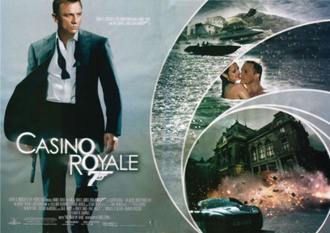
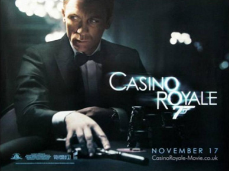
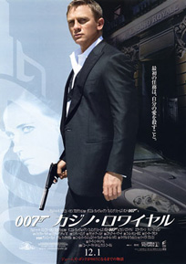
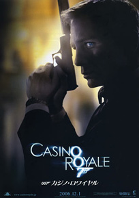
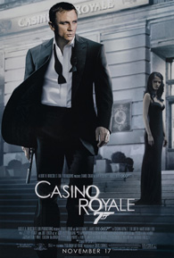
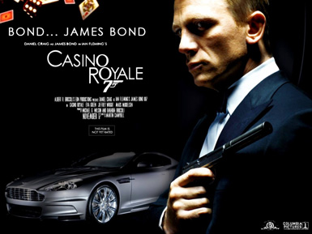
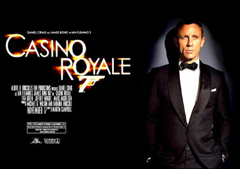

Barbara Broccoli
Robert Wade
Paul Haggis
Stillking Films
Babelsberg Film
Columbia Pictures
Carter: An MI6 agent who accompanies Bond in Madagascar.
MI6 agent James Bond gains his licence to kill and status as a 00 agent by assassinating the traitorous MI6 section chief Dryden at the British Embassy in Prague, as well as his contact, Fisher, in a bathroom in Lahore, Pakistan.
In Uganda, the mysterious liaison Mr. White introduces warlord Steven Obanno of the Lord's Resistance Army to Le Chiffre, a terrorist financier. Obanno entrusts Le Chiffre with a large sum of money to invest safely for him; instead Le Chiffre uses it to buy put options on the aerospace company Skyfleet, thus betting the money on the company's failure.
In Madagascar, Bond pursues bomb maker Mollaka to an African embassy, shooting him dead and blowing up the building. In London, MI6 chief M admonishes Bond for having violated international law, and advises him to rethink his future as an agent.
Clues from Mollaka point to corrupt Greek official Alex Dimitrios. Bond finds Dimitrios in the Bahamas and, after seducing his wife, Solange, pursues him to Miami. Bond kills Dimitrios and follows his henchman to the airport. He thwarts the destruction of Skyfleet's airliner, costing Le Chiffre his investment. To recoup the money, Le Chiffre sets up a high-stakes Texas hold 'em tournament at the Casino Royale in Montenegro. MI6 enters Bond in the tournament, believing a defeat will force Le Chiffre to seek asylum with the British government, which they will grant in exchange for information on his clients. On the train to Montenegro, Bond meets Vesper Lynd, a British Treasury agent there to protect the government's $10 million buy-in.
In Montenegro, Bond and Vesper meet their MI6 contact, René Mathis. Bond gains the upper hand at the start of the game. During a break, Obanno, furious at the loss of his investment, ambushes Le Chiffre in his suite. After Obanno leaves Le Chiffre's room, Bond engages him and strangles him to death. Vesper is traumatised by the encounter, but Bond comforts her. When the tournament resumes, Bond loses his initial stake, and Vesper refuses to fund further playing. Frustrated, Bond is about to kill Le Chiffre when he meets Felix Leiter, a fellow player and CIA agent who is on the same mission as Bond. Leiter, on the verge of losing, agrees to stake Bond on the condition that the CIA takes custody of Le Chiffre after his defeat.
Bond rapidly rebuilds his position before the next break. Le Chiffre's girlfriend, Valenka, spikes Bond's martini with digitalis poison. Bond vomits and retreats to his Aston Martin to inject himself with an antidote. MI6 instructs him to use the defibrillator, but a wire is disconnected; Vesper saves Bond by reconnecting the wire. Bond returns to the game just as Leiter loses his last hand to Le Chiffre. The tournament culminates in a $115-million hand in which the remaining players, including Bond and Le Chiffre, go all in. Le Chiffre trumps the other players, but Bond wins with a straight flush.
After Bond and Vesper share a romantic dinner, Vesper is kidnapped by Le Chiffre's men. Bond pursues them in his Aston Martin. He sees Vesper lying in the street and swerves to avoid her, crashing his Aston Martin. They are taken captive by Le Chiffre. Before Bond falls unconscious, Le Chiffre reveals that Mathis was his mole in MI6. Le Chiffre tortures Bond for the password to the account containing the money, but Bond refuses to give in. As Le Chiffre prepares to castrate Bond, White bursts in and shoots him dead. Bond awakens in a hospital on Lake Como as Mathis is taken in by MI6. Bond decides to resign from MI6 to be with Vesper.
Bond and Vesper travel to Venice. M calls Bond and tells him the money was never deposited. Bond calls Mendel, the Swiss banker responsible for the monetary transactions following the poker tournament, to figure out what is going on. Mendel informs Bond that the money has been deposited, but is being withdrawn as they speak. Realising Vesper has stolen it, Bond pursues her and her clients into a building. The building is damaged in the struggle and begins to sink into the Grand Canal, with Vesper trapped inside. Bond kills Vesper's clients and attempts to save her, but she refuses his attempts and drowns. White, watching nearby, walks away with the money.
Bond rejoins MI6 and copes with Vesper's death by denouncing her as a traitor. M informs him the same organisation behind Le Chiffre had kidnapped Vesper's lover and threatened to kill him unless she became a double agent. During the torture with Le Chiffre, Vesper made a deal: the money in exchange for Bond's life. Bond discovers a text message left for him by Vesper with White's name and phone number.
At his estate in Lake Como, White receives a phone call from Bond. As he asks for the caller's identity, Bond shoots him in the leg, then introduces himself: "The name's Bond... James Bond."
Pierce Brosnan had signed a deal for four films when he was cast in the role of James Bond. This was fulfilled with the production of Die Another Day in 2002. At this stage, Brosnan was approaching his 50th birthday. Brosnan kept in mind fans and critics were not happy with Roger Moore playing Bond until he was 58 and speculation began the producers were seeking to replace Brosnan with a younger actor. Brosnan officially announced he was stepping down in February 2004. At one point, producer Michael G. Wilson claimed there was a list of over 200 names being considered for his replacement. Croatian actor Goran Višnjic auditioned for the role the same day as Craig, but was reportedly unable to master a British accent. New Zealander Karl Urban was considered, but was unable to make the screen test due to filming commitments. According to Martin Campbell, Henry Cavill was the only other actor in serious contention for the role, but at 22 years old was considered too young. Australian actor Sam Worthington and Scottish actor Dougray Scott were also considered. Hugh Jackman was approached to play the character just before Craig was chosen to play Bond but turned it down due to other commitments.
In May 2005, English actor Daniel Craig stated MGM and producers Michael G. Wilson and Barbara Broccoli had assured him he would get the role of Bond, and Matthew Vaughn told reporters MGM offered him the opportunity to direct the new film, but Eon Productions at that point had not approached either of them. A year beforehand, Craig rejected the idea of starring, as he felt the series had descended into formula; only when he read the script did he become interested. Craig read all of Fleming's novels to prepare for the part, and cited Mossad and British Secret Service agents who served as advisors on the set of Steven Spielberg's Munich (2005) as inspiring because, "Bond has just come out of the service and he's a killer ... You can see it in their eyes, you know immediately: oh, hello, he's a killer. There's a look. These guys walk into a room and very subtly they check the perimeters for an exit. That's the sort of thing I wanted."
On 14 October 2005 Eon Productions, Sony Pictures Entertainment and MGM announced at a press conference in London that Craig would be the sixth actor to portray James Bond. Taking time off from reshoots for The Invasion, a business-suit clad, rather long-haired Craig boarded a Royal Marines Rigid Raider from HMS Belfast before travelling to HMS President where he was introduced to the world's press. Significant controversy followed the decision, with some critics and fans expressing doubt the producers had made the right choice. Throughout the entire production period, Internet campaigns such as "danielcraigisnotbond.com" expressed their dissatisfaction and threatened to boycott the film in protest. Craig, unlike previous actors, was not considered by the protesters to fit the tall, dark, handsome and charismatic image of Bond to which viewers had been accustomed. The Daily Mirror ran a front-page news story critical of Craig, with the headline, The Name's Bland - James Bland.
The next important casting was that of the lead Bond girl, Vesper Lynd. Casting director Debbie McWilliams acknowledged Hollywood actresses Angelina Jolie and Charlize Theron were "strongly considered" for the role and Belgian actress Cécile de France had also auditioned, but her English accent "wasn't up to scratch." French actress Audrey Tautou was also considered, but not chosen because of her role in The Da Vinci Code, which was released in May 2006. It was announced on 16 February 2006 French actress Eva Green would play the part.
Principal photography for Casino Royale commenced on 3 January 2006 and concluded on 20 July 2006. The film was primarily shot at Barrandov Studios in Prague, with additional location shooting in the Bahamas, Italy and the United Kingdom. The shoot concluded at Pinewood Studios. Michael G. Wilson had stated Casino Royale would either be filmed or take place in Prague and South Africa. However, Eon Productions encountered problems in securing film locations in South Africa. After no other locations became available, the producers had to reconsider their options. In September 2005, Martin Campbell and director of photography Phil Méheux were scouting Paradise Island in the Bahamas as a possible location for the film. On 6 October 2005, Martin Campbell confirmed Casino Royale would film in the Bahamas and "maybe Italy". In addition to the extensive location filming, studio work including choreography and stunt co-ordination practice was performed at the Barrandov Studios in Prague, and at Pinewood Studios, where the film used several stages, the paddock tank and the 007 Stage. Further shooting in the UK was scheduled for Dunsfold Aerodrome in Surrey, the cricket pavilion at Eton College (although that scene was cut from the completed movie) and the Millbrook Vehicle Proving Ground in Bedfordshire.
After Prague, the production moved to the Bahamas. Several locations around New Providence were used for filming during February and March, particularly on Paradise Island. Footage set in Mbale, Uganda, was filmed at Black Park, a Country Park in Buckinghamshire, on 4 July 2006. Additional scenes took place at Albany House, an estate owned by golfers Ernie Els and Tiger Woods. The crew returned to the Czech Republic in April, and continued there, filming in Prague, Planá and Loket, before completing in the town of Karlovy Vary in May. A famous Czech spa, Karlovy Vary was used as the exterior of the Casino Royale, with the Grandhotel Pupp serving as "Hotel Splendide". The main Italian location was Venice, where the majority of the film's ending is set. Other scenes in the latter half of the film were shot in late May and early June at the Villa del Balbianello on the shores of Lake Como. Further exterior shooting for the movie took place at properties such as the Villa la Gaeta, near the lakeside town of Menaggio.
A recreation of the Body Worlds exhibit provided a setting for one scene in the film. Among the Body Worlds plastinates featured in that scene were the Poker Playing Trio (which plays a key role in one scene) and Rearing Horse and Rider. The exhibition's developer and promoter, German anatomist Gunther von Hagens, also has a cameo appearance in the film, although only his trademark hat is actually visible on screen.






